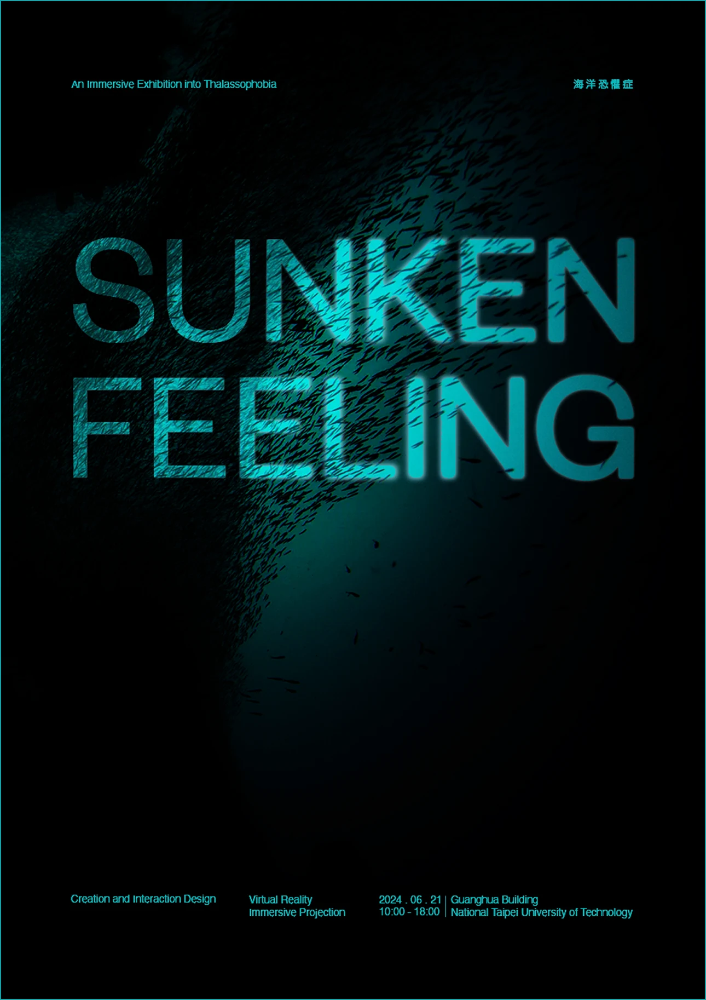
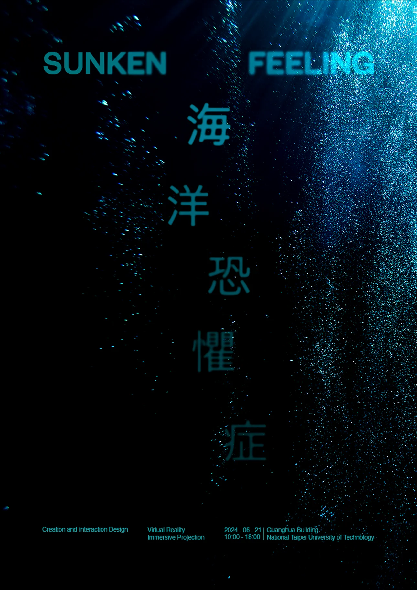
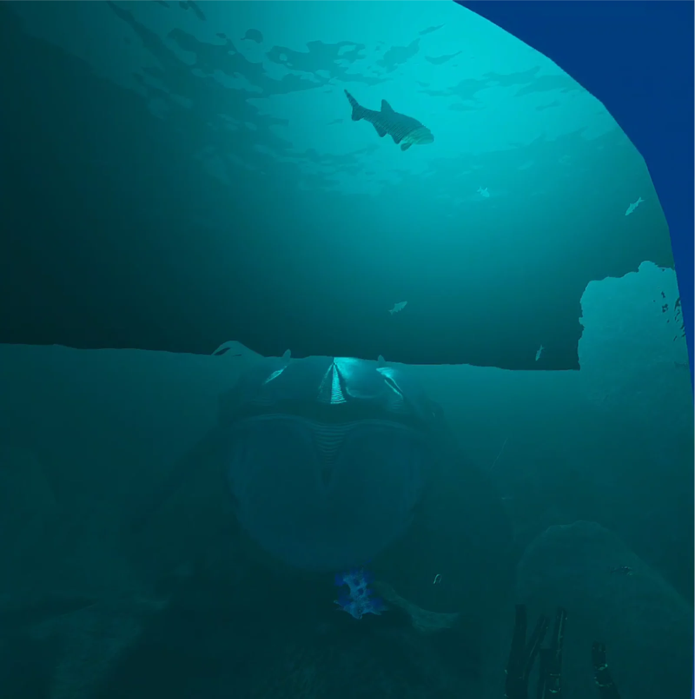
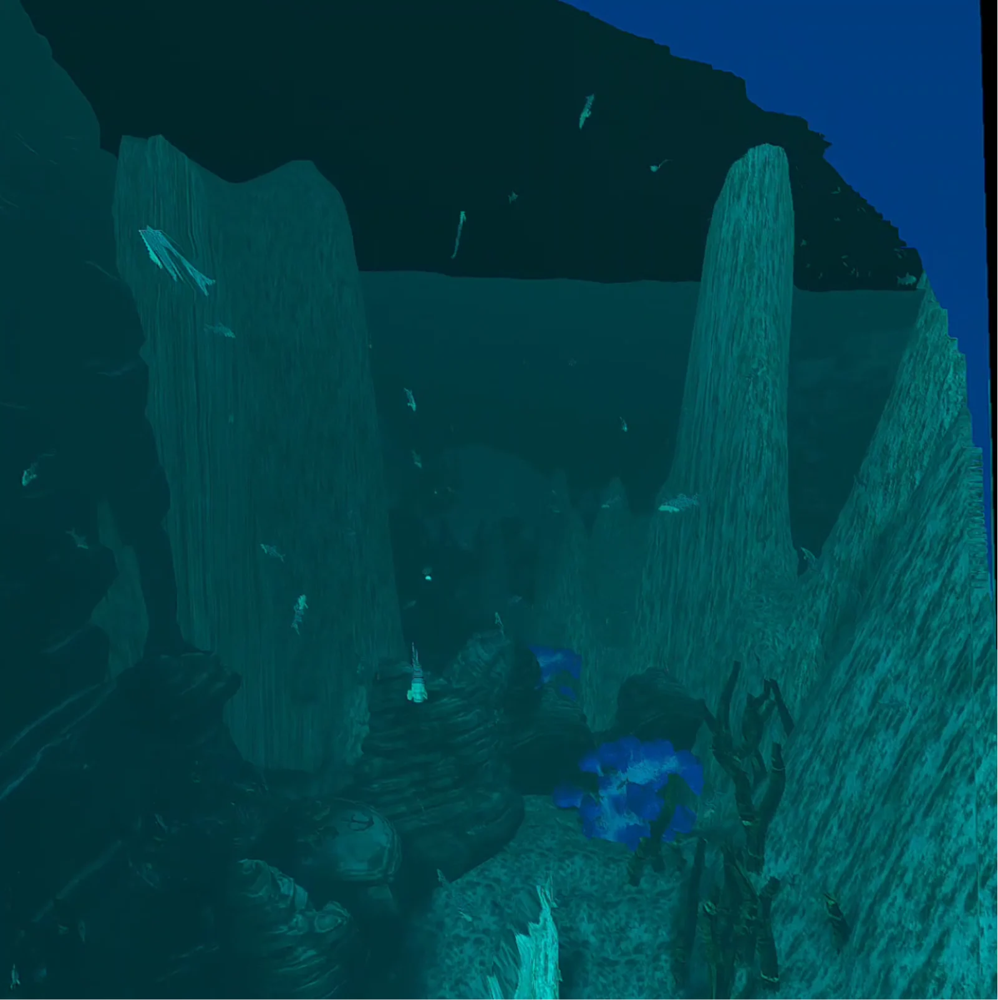
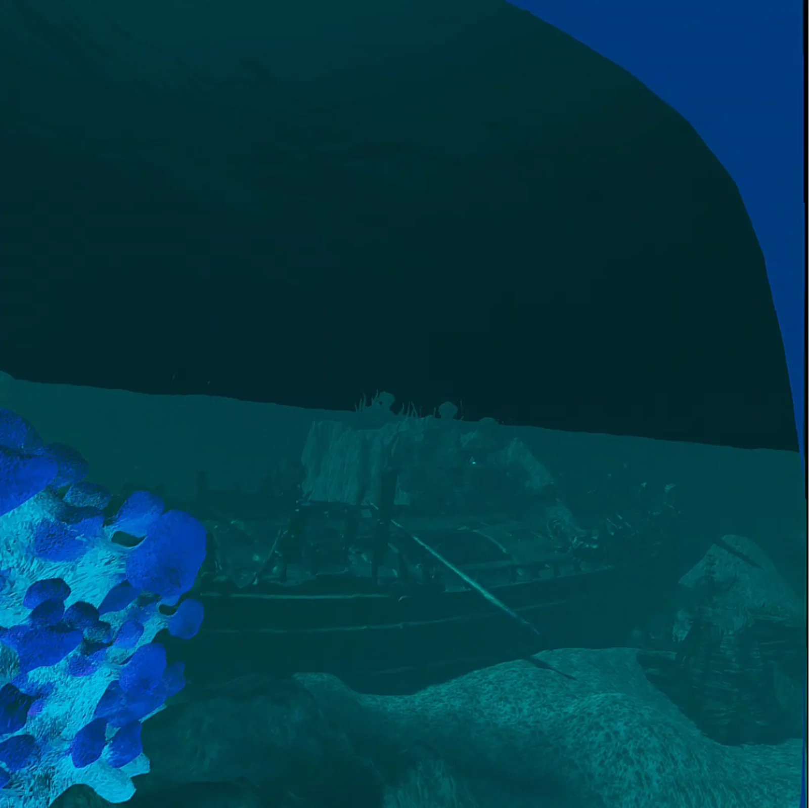
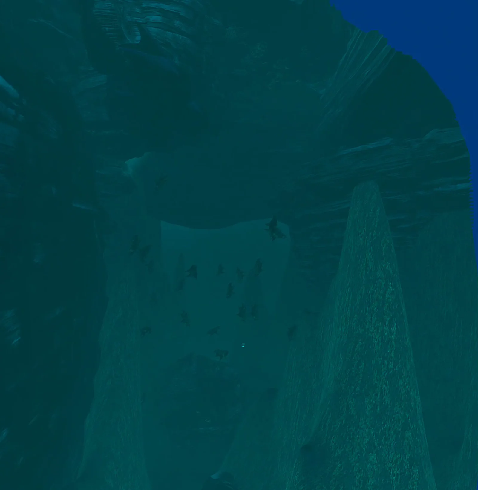

Demo
Welcome to Sunken Feeling
We invite you to explore the depths of the ocean together.
Dive into an experience like no other as you step into two distinct spaces designed to evoke the intense emotions associated with thalassophobia, the fear of the vast ocean.
Whether you seek to confront your fears or simply marvel at the wonders of the sea, the Thalassophobia Interactive Exhibition promises an unforgettable journey into the depths of the human psyche and the ocean’s mysteries.


What exactly is Thalassophobia?
If you have thalassophobia, you may experience physical symptoms such as sweating, dry mouth, or heart palpitations when you are near or thinking about large bodies of water. You may also experience emotional symptoms like anxiety or fear of death.
Thalassophobia is the intense fear of large bodies of water, such as the ocean or large lakes. People with thalassophobia have anxiety that is so strong and persistent that it interferes with their quality of life.
Symptoms of Thalassophobia
Physical symptoms
Emotional symptoms
Thalassophobia shares symptoms with other specific phobias, such as claustrophobia. The defining characteristic of thalassophobia is that these symptoms are triggered by exposure to or thoughts about deep bodies of water. Thalassophobia can include both a fear of drowning in deep water and a fear of what might be lurking in deep water.
People experience thalassophobia in different ways. Some people might panic when swimming in deep water, being on a boat, or when unable to touch the bottom of a pool. Others experience fear just thinking about the ocean or when looking at pictures of deep water
Treatment
Exposure therapy
This treatment involves exposing a person to their feared stimuli at increasing levels of intensity until fear extinction is reached.
Cognitive behavioral therapy (CBT)
In CBT, a person learns insight into their own thought patterns and behavioral responses. Through this insight, they are able to alter their thoughts and subsequently change behaviors and feelings.
Medication
Beta blockers: These medications are often helpful in preventing symptoms of anxiety such as trembling and a racing heart.
Sedatives: Benzodiazepines can help you relax in the presence of a triggering stimulus. Since these drugs can be addictive, they are not recommended for long-term treatment of specific phobias.
What the diver sees



